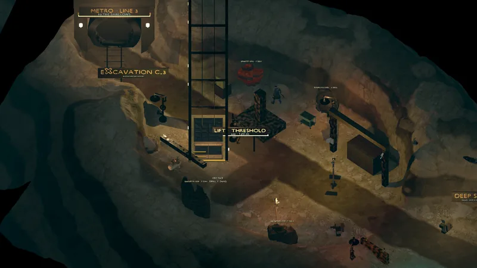

Mazmorra · Subterránea · 3 pisos
Excavation C-3
Panorama
Una excavación activa y custodiada al fondo del pozo. El piso uno está abierto; perforar el Deep Seal en su extremo este abre el pozo de relevamiento hacia los pisos dos y tres.


Salidas y conexiones
Niveles debajo: C-3 · Floor 2 (FLOOR 2), C-3 · Floor 3 (FLOOR 3).
| Hacia | Tipo | Cartel de salida | Borde | Moto | Estado |
|---|---|---|---|---|---|
| The Shallows | Túnel · túnel de metro | RETURN · THE SHALLOWS | W | Se cruza montado | Jugable hoy |
| The Threshold | Pozo · elevador | LIFT · THE THRESHOLD | UP | Se cruza montado | Jugable hoy |
| C-3 · Floor 2 | Pozo · escaleras | DEEP SURVEY SHAFT · FLOOR 2 (cerrado hasta perforar el Sello Profundo) | DOWN | Sólo a pie | Jugable hoy |
| C-3 · Floor 3 | Extracción (sólo ida, ← FLOOR 3) | EXTRACTION LIFT · C-3 FLOOR 1 | — | — | Jugable hoy |
Criaturas
3 criaturas a la vez cuando está todo lleno.
| Criatura | Cantidad | Reaparición | XP | PV |
|---|---|---|---|---|
| 2 | Ubicación fija | 60 | 70 | |
| 1 | Ubicación fija | 35 | 30 |
Puntos de perforación
Mantené F en un punto con un taladro en la ranura de herramienta: Big Daddy Drill.
| Material | Puntos | Rinde |
|---|---|---|
| Magnetite Lode | 1 | Ferrous Sample ×4 |
| Basalt | 1 | Al romperlo revela: Deep Survey Shaft |
| Magnetite Lode | 2 | Lodestone Magnetite ×2 |
| Hematite Vein | 1 | Redvein Hematite ×2 |
| Lumenita Cluster | 1 | Lumenita ×1 |
Descubrimientos
- Deep Survey Shaft — oculto hasta que perforás el sello
Carteles que vas a leer
EXCAVATION C-3authorised personnelORE FACEDRILL F (hold)DEEP SEALbasalt · drill to breachMETRO · LINE 3to THE SHALLOWS
Ver también
The Shallows · The Threshold · C-3 · Floor 2 · Zonas · Mapa del mundo